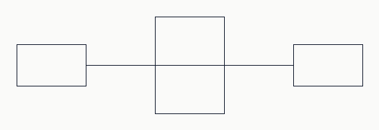
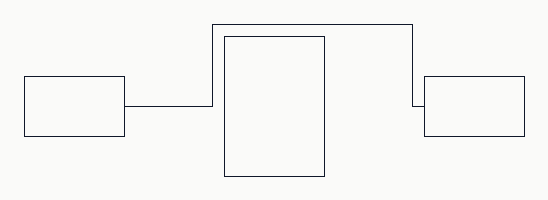

Explanation · compatibility and routing
How orthogonal connectors avoid obstacles
Boardmesh keeps existing clear routes and attempts to reroute blocked orthogonal connectors around nearby visible node bounds. Saved boards keep the same IDs, endpoint bindings, and JSON format.
What changes in the drawing
The two images below use the same board document generated by the earlier published release. The first route crosses the middle node. The new route goes around it. The source and target attachment points remain unchanged.


Which objects use the new router
Only connectors whose stored kind is orthogonal use the adapter. Straight connectors, spline connectors, ordinary add_line objects, and freehand strokes retain their previous geometry. The existing MCP catalog does not add a connector-creation tool.
Richer connectors already exist in the scene model and in imported boards. To inspect an example, open the scene JSON. Use load_scene_json only in a new empty test session. It is a replacement operation, not a merge.
Compatibility rules
- If the previous path does not cross an eligible obstacle, keep it exactly.
- Attempt a new route only for blocked orthogonal connectors.
- Use visible shape and text bounding rectangles as obstacles. Open lines, strokes, other connectors, and canvas frames are not obstacle boxes.
- Exclude boxes containing an endpoint in their interior, so existing center-bound and free-inside-node endpoints remain supported.
- Process at most 32 eligible rectangles per attempt. Larger scenes keep the previous path instead of building an unbounded search grid during painting or hit testing.
- Translate coordinates relative to the start point before using the upstream router. Require exact conversion of endpoints and box bounds to its
f32representation. - Accept a route only if its endpoints match exactly, every segment is orthogonal, and it does not cross an eligible obstacle.
- If conversion, route search, or validation fails, retain the previous path.
This is best-effort local routing. Some diagrams can still have crossings. It does not rearrange nodes, optimize a whole graph, or separate all parallel edges.
Why use an adapter
The tested ortho-router 0.1.1 library supplies obstacle-aware orthogonal search. Mesh keeps its existing board model, anchors, straight and spline behavior, and hit-testing interfaces. The adapter handles the numeric and compatibility differences. The dependency is pinned to the tested version and distributed under its MIT license option.
Boardmesh now requires Rust 1.95 or newer to build. Existing binary users do not need a Rust compiler. The local Mesh ID helper remains internal and is included in standalone source exports.
What the comparison established
The rerunnable comparison covers 89 geometry fixtures: 81 combinations of the nine existing anchor kinds and eight clear, blocked, negative-coordinate, offset, degenerate, and large-coordinate cases. Four blocked examples avoided obstacles that the old router crossed. Direct large-coordinate conversion lost endpoint precision; recentering fixed the local large-coordinate case, while an unrepresentable wide span still needed fallback. Seven anchor combinations reported no upstream route. The production adapter preserves the existing route in unsupported cases.
These are geometry results, not a speed benchmark. The full comparison JSON preserves the actual outputs. Tests additionally load a board accepted by the old release, check unchanged document data, preserve clear paths and straight/spline styles, and verify selection on the rerouted connector.
Repeat the comparison
python3 opt/boardmesh/scripts/compare_routing.py \
--toolchain 1.95.0 --output /tmp/boardmesh-routing.json
cargo test --locked -p boardmesh --test routing_compatibilityThe comparison creates an isolated temporary Cargo project outside the repository. It does not modify your boards. Use --target-dir to select a reusable compiler cache.